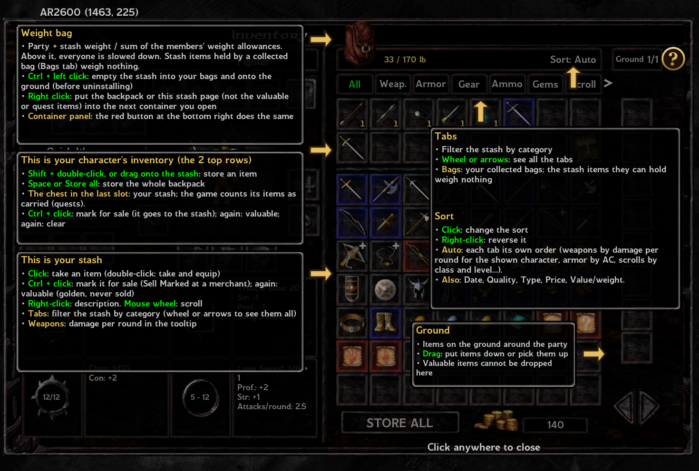

Party Stash v1.2
全队共享的无限储物箱，仿照《永恒之柱》，内置于重新设计的物品栏页面。适用于 Baldur's Gate: Enhanced Edition（含或不含 Siege of Dragonspear）、Baldur's Gate II: Enhanced Edition 和 EET。

功能
- 共享储物箱：所有队员都能在物品栏页面使用同一个无限储物箱。任务依然能识别存放在里面的物品。
- 全新物品栏页面：背包和储物箱合为一个可滚动的网格，另有地面栏和紧凑的 2×2 属性（属性名取 3 个字）。
- 分页：全部、武器、护甲、装备、弹药、宝石、卷轴、药水、任务、杂项、包袋。
- 排序：自动（每页有自己的顺序：武器按当前角色的每轮伤害，护甲按 AC，卷轴按职业和等级……）、日期、品质、类型、价格、价值/重量。右键单击排序按钮可反转顺序。
- 提示：红色 = 当前角色无法使用，蓝色 = 未鉴定，+ = 对其是升级（或队中法师仍可学习的卷轴）。
- 标记：按住 Ctrl 单击物品（储物箱、背包或已装备）标记为出售（变暗），再按一次设为贵重（金色），再按一次清除。“出售标记”可在任意商人处一次性卖出所有标记出售的物品，按钮上显示总价。
- 每轮伤害：武器提示显示当前角色的每轮伤害和 THAC0（力量、熟练度、每轮攻击次数、双持时两只手）；属性栏显示每轮攻击次数。
- 充能：魔杖等带充能的物品在格子角落显示剩余充能。
- 贵重物品：永不出售，“全部存放”和商人的选择会跳过它们，且不能丢在地上。背包中标记出售的物品会直接进入储物箱。
- 放入容器：右键单击重量旁的大包袋，然后打开一个容器，选择放入背包或当前储物箱页面（贵重物品和任务物品保留）。
- 选项（独立组件）：储物箱没有重量；战役切换时保留队伍金币（BG1 到 SoD，EET 中 SoD 到 BG2）；硬核：这些切换也会清空储物箱。
- 包袋：放入储物箱的包袋会被倒空并保留在“包袋”页中；它能容纳的储物箱物品不计重量（次元袋：整个储物箱）。
- 重量：储物箱计入成员负重上限之和；超过后全队减速。
- 两种外观：博德之门 1 或博德之门 II 风格，两款游戏都可用。
- 战利品排序（可选）：地上的物品堆、容器和拾取栏先列任务物品，再列无重量物品，其余按价值/重量排序。

Hover help: keybinds in green

商人：出售标记

包袋页
需求
游戏版本 v2.6.6 或 v2.7.x，以及 EEex（需先安装）。替换物品栏界面的模组（Dragonspear UI++……）会与新页面冲突。LeUI 可与 Party Stash 一起使用：请选择 Baldur's Gate II 外观。Infinity UI++ 可与 Party Stash 一起使用（请先安装）。
安装
- 安装 EEex。
- 将压缩包解压到游戏文件夹（chitin.key 所在处）。
- 运行 setup-PartyStash.exe，选择语言、外观（推荐与你的游戏相符的外观），如需要再选择战利品排序。
- 通过 InfinityLoader.exe（EEex）启动游戏。
操作（物品栏页面）
| 动作 | 操作 |
|---|
| 从储物箱取出物品 | 单击（双击：取出并装备） |
| 存放背包物品 | Shift + 双击，或拖到储物箱网格上 |
| 存放整个背包 | “全部存放”按钮，或空格键 |
| 标记出售/贵重/清除 | Ctrl + 单击物品（储物箱、背包或已装备） |
| 说明 | 右键 |
| 滚动网格、分页、地面 | 鼠标滚轮、箭头 |
| 帮助：Party Stash 为本页添加的功能 | 右上角的金色 ? 按钮 |
| 反转排序 | 右键单击排序按钮 |
| 把背包或一页储物箱放入容器 | 右键单击大包袋，再打开容器；或容器面板右下角的红色按钮 |
| 存放包袋 | Shift + 双击，或“全部存放”（会先确认） |
| 清空储物箱（卸载前） | 按住 Ctrl 左键单击重量旁的大包袋 |
卸载
先在游戏中清空储物箱：按住 Ctrl 左键单击重量旁的大包袋。已收集的包袋会装着它们能容纳的物品还给你，其余物品都会掉在地上。然后运行 setup-PartyStash.exe 卸载。否则储物箱内容会留在存档中，但在重新安装前无法取用。
常见问题
排序是怎么工作的？ 每个标签页都有自己的默认排序（自动：武器按每轮伤害，护甲按 AC，卷轴按职业和等级……），也可以选择日期、品质、类型、价格或金/磅。
那包袋呢，连次元袋也行？ 不会嵌套。放入储物箱的包袋会被倒空进储物箱，并保存在“包袋”标签页中，因此储物箱始终是一个列表。每个收集到的包袋都会让储物箱中它能装下的物品不计重量。次元袋涵盖所有类型：有了它，整个储物箱都没有重量。
我什么都捡。这是问题吗？ 储物箱是无限的。没有次元袋时，它的重量计入队伍的合计负重（超过后全员减速）。“全部存放”一键清空背包，“出售标记”可在任何商人处一次卖掉所有标记的物品。
会拖慢游戏吗？ 没有针对每个生物的钩子（没有 opcode、脚本或动作钩子）：工作是分散进行的（每 500 毫秒快速检查一次，每 2 秒计算一次队伍重量），所以屏幕上的生物数量不会改变它的开销。
说明
- 从博德之门进入 Siege of Dragonspear 时，只要在 BG1 结束与 SoD 开始之间不关闭游戏，储物箱就会保留。
- 欢迎改进翻译：PartyStash/tra/。
- EET（Enhanced Edition Trilogy）：已在 v2.6.6 上测试。储物箱可在从 Siege of Dragonspear 进入 Baldur's Gate II 时保留。
许可证
MIT。作者：sad0。